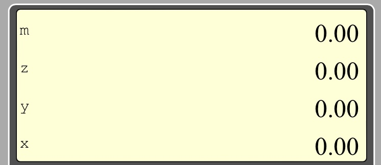

The Reverse Polish Notation
Stk 21 is an "on line" calculator which does mathematical calculations using the Reverse Polish Notation (RPN), which means that it uses a "computation stack" (registers referenced as
x-register,
y-register,
z-register) to perform computational operations.
This specific calculation methodology doesn't require the usual, but complex, bracket group to set the calculation hierarchy. Calculations are therefore carried out quickly and smoothly.
Althought the RPN has been invented by the polish mathematician
Jan Łukasiewicz in 1924, it has been widely implemented in the Hewlett Packard pocket calculators' starting in the 1970's.
More informations on the old HP calculators are available here :
https://www.hpmuseum.org.
When using the RPN notation, you first enter the numbers used for the calculation in the computation stack, then you perform the operation.
For example, if you want to add
78 to
56, you have to :
- key in
5 and
6. Press the
ENTER key to finalize the entry. The number in
x-register is now
56
- key in
7 and
8. Press the
ENTER key again. This will move up automatically the
56 value in the
y-register, and the
x-register now displays
78
- press the
+ key. This will add the number in
y-register to the number in
x-register. The
x-register will therefore display the result ie.
134
The display area
This area includes :
- the stack area which includes the computation registers named x-register, y-register, z-register and the storage register named m-register
- The modes area shows the display of the selected modes, and the information display

From right to left the informations displayed are the followings :
- a yellow circle that shows that the yellow key was pressed, therefore the bottom function of keys activated.
- the angle mode which can be DEG for degree or RAD for radian
- the display mode which can be FIX for fixed display , SCI for scientific display or ENG for engineering display
- the number of displayed decimals, from 0 to 8
- the information display which shows warning messages : error when a calculation error occurs (for example divided by 0), ➔SCI when the number is too large to be displayed in the FIX mode, and the SCI mode is automaticaly activated
The keyboard area
The keys are organized in 4 main categories:
- the yellow key which is used to select the bottom function of some keys
- the grey keys which are related to stack and storage management, display modes selection ...
- the blue keys which are used to perform mathematical operations
- the white keys, including the figures from 0 to 9, the decimal point, the minus sign... that is to says the ones used to key in a new number in the x-register
The yellow key
0000 is used to select functions, written in yellow color and located at the bottom of some keys. For example to select the CHS function you have to press first the
0000 key than the

one
The grey keys
DEG Degree. All trigonometric calculations will be done using the degree unit
RAD Radian. All trigonometric calculations will be done using the radian unit
FIX Fixed display. Select fixed point notation display
Notice : some numbers, big ones, or with lot of displayed decimals, could be to large to be displayed in this mode (more than 12 characters). When this happen, the calculator will automatically move to the scientific display mode. A warning message will be displayed in the information display
SCI Scientific display. Select scientific notation display. Number are displayed with a mantissa and an exponent. Example: 12345.67 is displayed as 1.23 E+04
ENG Engineering display. Select engineering notation display. Number are displayed with a mantissa and an exponent, but the exponent is a multiple of 3. This is usefull in physics while working with multiples or fractions of units, such as kilo, mega... Example: 12345.67 is displayed as 12.34 E+03
D+ Decimal +. Increase the number of displayed decimals by one.
Notice that the number of decimals is limited to 8
D- Decimal -. Decrease the number of displayed decimals by one.
Notice that the minimum number of decimals is 0
CSTK Clear stack. All stack registers and the storage register are set to 0
DUP Duplicate. The number in y-register is moved to the z-register, and the number in y-register is set to the number in x-register
CHS Change sign. The number x, in the x-register is replaced by -x
SWAP Swap. The number in the x-register and the number in the y-register are swapped
DROP Dropping. The stack is moved down: the number in the x-register is set to the number in the y-register. Then the number in the y-register is set to the number in the z-register. Finally the number in the z-register is set to 0.
Notice that the original number in the x-register is lost
ENTER finalize the entering process of a new number in the x-register
STO Store. The current number in the x-register is copied in the storage register.
Notice : storing a value in the storage doesn't erase it from the x-register
RCL Recall. The stack is moved up and the current number in the m-register is copied in the x-register. Notice: recalling a value from storage doesn't erase it from the storage register
The blue keys
LN Natural logarithm. The number x in x-register (x) is replaced by natural logarithm(x).
Notice: if the number in the x-register (x) is = 0 or < 0, a warning is set in the information display and the operation is not done
e^x Natural antilogarithm. The number x in the x-register is replaced by e (2.718 ...) raised to power of value x.
Notice: if the results exceed the maximum number accepted by the calculator, a warning is set in the information display and the operation is not done
LOG Common logarithm. The number in the x-register (x) is replaced by common logarithm(x).
Notice: if the number in the x-register(x) = 0 or < 0, a warning is set in the information display and the operation is not done.
x^y Power. Raises the number in the x-register (x) to power of value y set in the y-register (y). The number in the x-register (x) is replaced by (x^y). The number in the y-register is replaced by the number in z-register. The number in the z-register is set to 0.
Notice: if the results exceed the maximum number accepted by the calculator, a warning is set in the information display and the operation is not done
SIN Sine. The number in the the x-register (x) is replaced by sine(x). If the DEG mode is set, the number in the x-register will be considered in degrees. If the RAD mode is set, the number in the x-register will be considered in radians
ASIN Arc sine. The number in the x-register (x) is replaced by arc sine(x). The result will be in degrees if the DEG mode is set, in radians if the RAD mode is set.
Notice: if number in the x-register (x) > 1 or < -1 a warning is set in the information display and the operation is not done.
COS Cosine. The number in the the x-register (x) is replaced by cosine(x). If the DEG mode is set, the number in the x-register will be considered in degrees. If the RAD mode is set, the number in the x-register will be considered in radians
ACOS Arc cosine. The number in the x-register (x) is replaced by arc cosine(x). The result value will be in degrees if the DEG mode is set, in radians if the RAD mode is set.
Notice: if number in the x-register (x) > 1 or < -1 a warning is set in the information display and the operation is not done.
TAN Tangent. The number in the x-register (x) is replaced by tangent(x). If the DEG mode is set, the number in the x-register will be considered in degrees. If the RAD mode is set, the number in x-register will be considered in radians
Notice: if number in the x-register (x) is equal to +90 degrees or -90 degrees (+pi/2 or -pi/2 in radians) a warning is set in the information display and the operation is not done
ATAN Arc tangent. The number in the the x-register (x) is replaced by arc tangent(x). The result value will be in degrees if the DEG mode is set, in radians if the RAD mode is set.
SQRT Square root. The number in the x-register (x) is replaced by square root(x).
Notice: if the number in the x-register < 0, a warning is set in the information display and the operation is not done
x^2 Square. The number in the x-register (x) is replaced by x squared.
Notice: if the results exceed the maximum number accepted by the calculator, a warning is set in the information display and the operation is not done
+ Plus. The number in the the x-register (x) is replaced by (x+y).The number in the y-register (y) is replaced by the number in the z-register. The number in the z-register is set to 0
- Substraction. The number in the the x-register (x) is replaced by (y-x). The number in the y-register (y) is replaced by the number in the z-register. The number in the z-register is set to 0.
x Multiplication. The number in the x-register (x) is replaced by (x * y). The number in the y-register (y) is replaced by the number in the z-register. The number in the z-register is set to 0.
Notice: if the results exceed the maximum number accepted by the calculator, a warning is set in the information display and the operation is not done
/ Division. The number in the x-register (x) is replaced by (y/x). The number in the the y-register (y) is replaced by the number in the z-register. The number in the z-register is set to 0.
Notice: if the number in x-register is equal to 0, a warning is set in the information display and the operation is not done
The white keys
0 to 9 numbers
. decimal point
- minus sign, used to enter a negative number or a negative exponent. Example : -123 or 456E-3. It should not be confused with the substraction key (a blue key), which substact one number from an other one
E exponent sign
PI place the mathematical value Pi (3.14...) into the x-register
C for clear. While keying a new number, remove the last entered sign from the x-register
Characteristics
- Maximum number accepted by the calculator: 9.99999999 e+99
- "error" code is displayed for the following operations:
- if the result of an operation exceed the maximum number accepted by the calculator
- natural logarithm(x), if (x) is = 0 or < 0
- common logarithm(x), if (x) is = 0 or < 0
- arc sine(x), if (x) > 1 or < -1
- arc cosine(x), if (x) > 1 or < -1
- tangent(x), if (x) is equal to +90 degrees or -90 degrees (+pi/2 or -pi/2 in radians)
- square root(x), if (x)< 0
- y/x, if (x)=0
- Maximum number of digits for the mantissa : 12
- Maximum number of digits for the decimals : 8
- Maximum number of digits for the exponent : 2